TP DNS — ESN Novatice
Contexte
L'ESN Novatice édite des logiciels destinés aux médiathèques. Elle dispose d'un serveur Windows et d'un serveur Linux au sein de son infrastructure.
La mission est de configurer un serveur DNS faisant autorité sur le domaine novatice.fr sur les deux systèmes, avec zones directe et inverse, enregistrements A, PTR et CNAME.
Debian 12 + Bind9
Installer et configurer Bind9 comme serveur DNS faisant autorité sur novatice.fr.
Étapes réalisées
- Installation du paquet bind9 sur Debian
- Configuration du fichier named.conf.local avec zone directe et zone inverse
- Création du fichier de zone directe dans /var/cache/bind/novatice
- Création du fichier de zone inverse dans /var/cache/bind/novatice.rev
- Test nslookup zone directe : debian11.novatice.fr → 192.168.0.72
- Test zone inverse : 192.168.0.72 → debian11.novatice.fr
- Test client : accès à www.novatice.fr depuis un navigateur
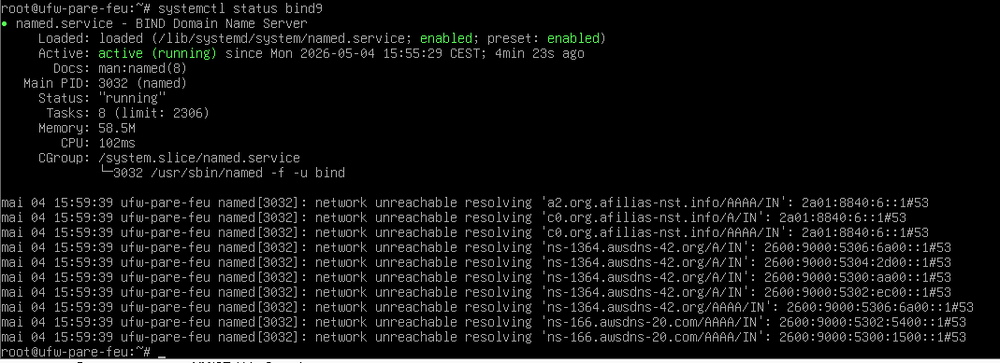
Fig. 1 — Statut du service Bind9 (systemctl status bind9)
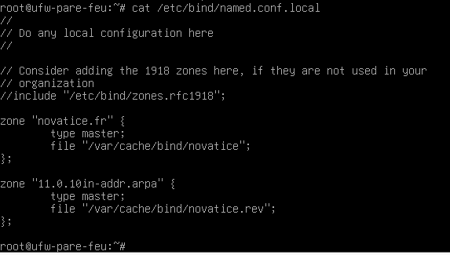
Fig. 2 — Fichier named.conf.local avec zone directe et zone inverse
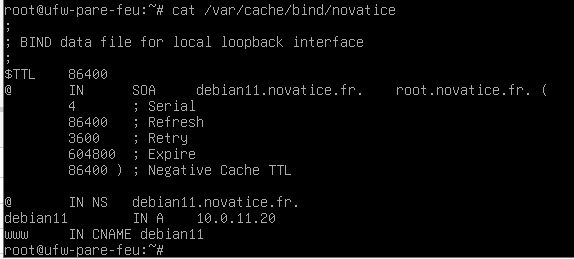
Fig. 3 — Fichier de zone directe /var/cache/bind/novatice
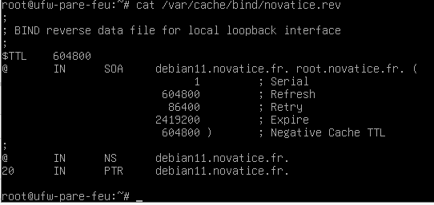
Fig. 4 — Fichier de zone inverse /var/cache/bind/novatice.rev
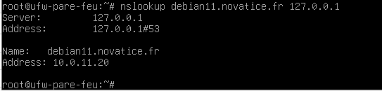
Fig. 5 — nslookup zone directe : debian11.novatice.fr → 192.168.0.72
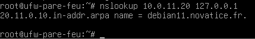
Fig. 6 — nslookup zone inverse : 192.168.0.72 → debian11.novatice.fr
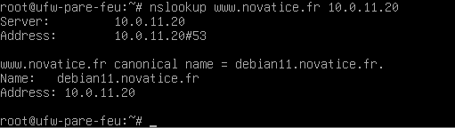
Fig. 7 — Test client : résolution de www.novatice.fr dans le navigateur
Windows Server 2019 — Gestionnaire DNS
Configurer le rôle DNS sur Windows Server 2019 via le Gestionnaire DNS.
Enregistrements configurés
| Nom | Type | Valeur |
|---|---|---|
| www | Hôte A | 192.168.0.95 |
| commercial | Alias CNAME | www.novatice.fr |
| compta | Alias CNAME | www.novatice.fr |
| rh | Alias CNAME | www.novatice.fr |
| tech | Alias CNAME | www.novatice.fr |
Étapes réalisées
- Installation du rôle DNS via le Gestionnaire de serveur
- Création de la zone directe novatice.fr
- Ajout des enregistrements : www (Hôte A → 192.168.0.95), commercial / compta / rh / tech (Alias CNAME → www.novatice.fr)
- Création de la zone inverse 0.168.192.in-addr.arpa avec pointeurs PTR
- Test PowerShell : nslookup www.novatice.fr et nslookup 192.168.0.95
- Test navigateur : www.novatice.fr affiche la page IIS
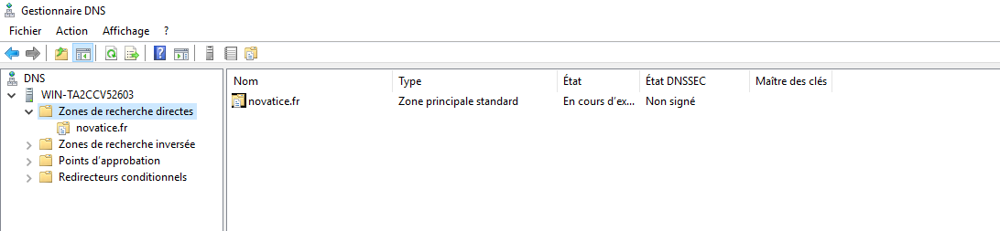
Fig. 8 — Gestionnaire DNS avec les zones créées
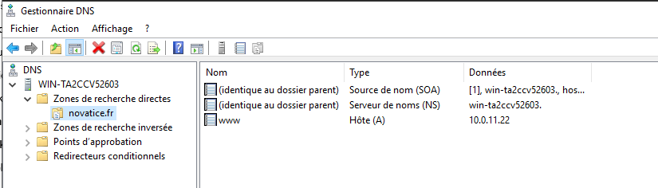
Fig. 9 — Zone directe novatice.fr avec les enregistrements A et CNAME
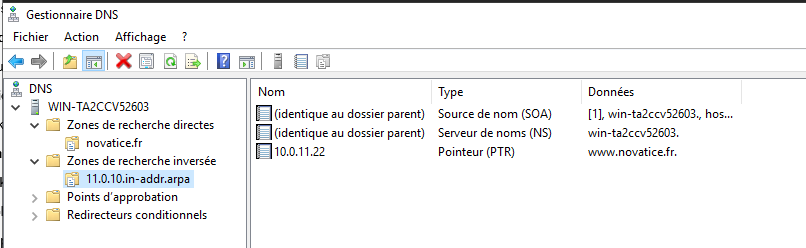
Fig. 10 — Zone inverse 0.168.192.in-addr.arpa avec les pointeurs PTR
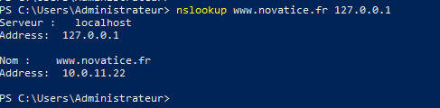
Fig. 11 — Tests nslookup depuis PowerShell (direct + inverse)
Fig. 12 — www.novatice.fr affiche la page IIS depuis le navigateur
Compétences mobilisées
- Gérer le patrimoine informatique
- Mettre à disposition un service informatique
- Installation et configuration de Bind9 (Debian)
- Zones directe et inverse DNS
- Enregistrements A, PTR, CNAME
- Rôle DNS Windows Server 2019
- Administration Linux / Windows Server
- Diagnostic DNS (nslookup)